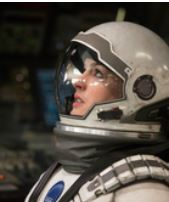

我的电影
我的电影
《星际穿越》（Interstellar）是克里斯托弗·诺兰执导的一部原创科幻冒险电影，由马修·麦康纳、安妮·海瑟薇、杰西卡·查斯坦及迈克尔·凯恩主演，基于知名理论物理学家，诺贝尔物理学奖 [1] 得主基普·索恩的黑洞理论经过合理演化之后，加入人物和相关情节改编而成。 [2] 影片由派拉蒙、华纳和传奇影业联合制作，派拉蒙负责北美发行，华纳负责海外发行，定于2014年11月7日在北美公映
《星际穿越》主要讲述了一队探险家利用他们针对虫洞的新发现，超越人类对于太空旅行的极限，从而开始在广袤的宇宙中进行星际航行的故事
2015年3月，《星际穿越》在第41届美国科幻恐怖电影奖土星奖获得了最佳科幻电影、最佳导演、最佳男女主角在内的10项提名
在不远的未来，随着地球自然环境的恶化，人类面临着无法生存的威胁。这时科学家们在太阳系中的土星附近发现了一个虫洞，通过它可以打破人类的能力限制，到更遥远外太空寻找延续生命希望的机会。一个探险小组通过这个虫洞穿越到太阳系之外，他们的目标是找到一颗适合人类移民的星球。在这艘名叫做“Endurance”的飞船上，探险队员着面临着前所未有，人类思想前所未及的巨大挑战.
库伯是一名前NASA宇航员，也是一名工程师。人类文明危在旦夕，每天只是在种植食物、吃饭喝水中度过，不再进行发明创造，不需要工程师，库伯没有工作可做，没有新创意的诞生。库伯也是一个鳏夫，有两个孩子。有一天，一个空前伟大的冒险机会来敲门，他能重拾梦想回到宇航员的位置，但对于库伯来说，当这个他曾痛苦放弃的梦想又回来，他却需要付出离开家庭的代价去追逐梦想；而且，他甚至不知道哪天才能结束冒险回家，就连能不能回来都是个问题。
女科学家，与库伯及其他两位科学家、两个机器人一同出发，穿越虫洞到另一个空间去探寻三个最有可能居住的星球，也面临着有去无回的险境。
库伯深爱的女儿，也一样喜欢科学，热爱探索， 库伯要离开她展开探索，在不同时空的父女二人被一个特殊物件所连接，她长大成人后，也成为了美国太空总署的科学家。